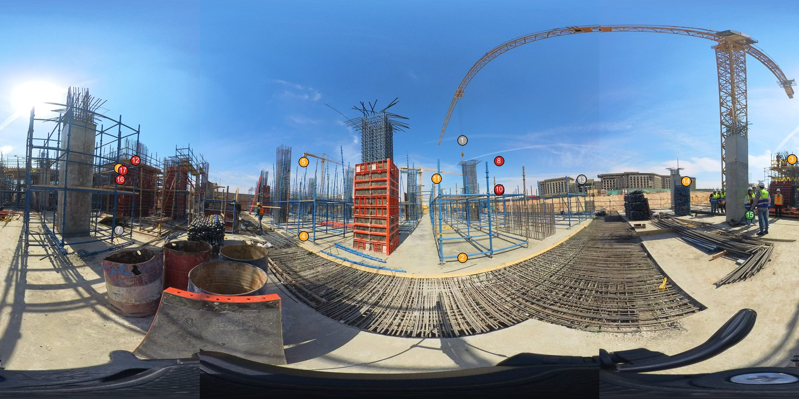
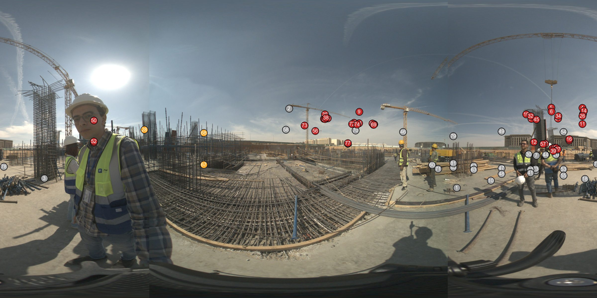
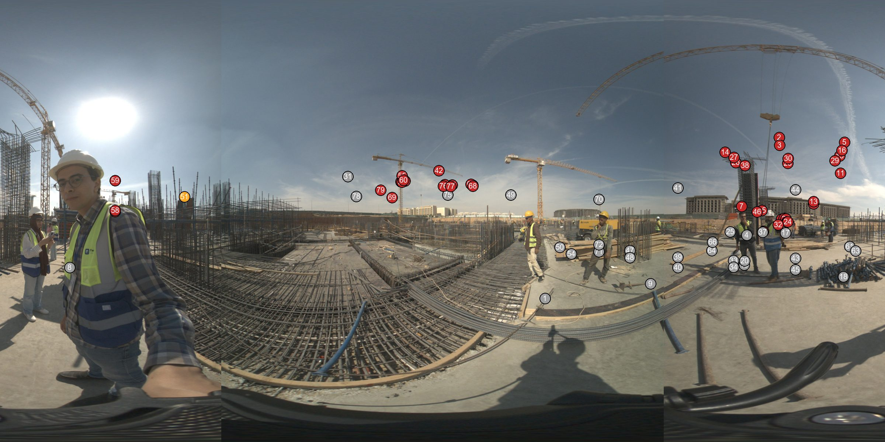
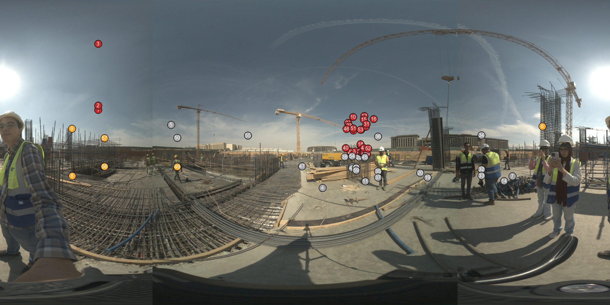
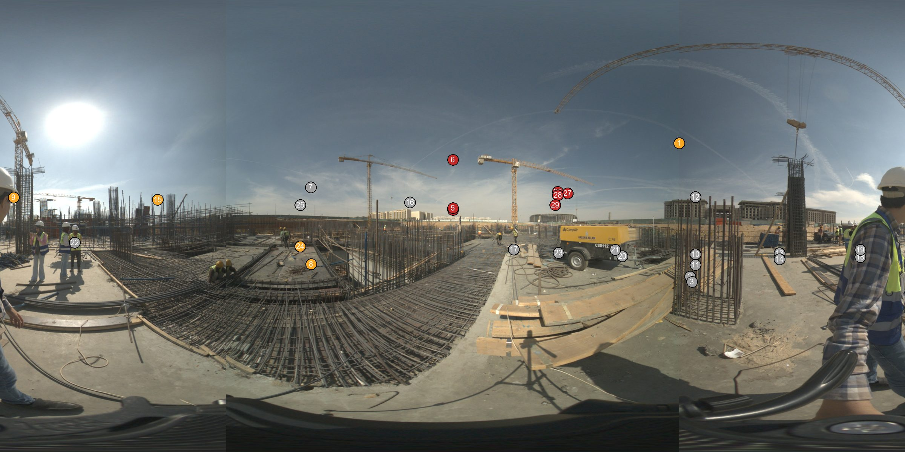
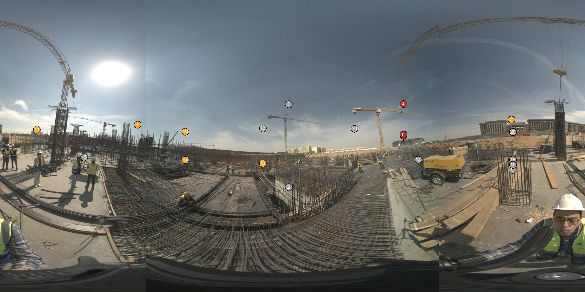
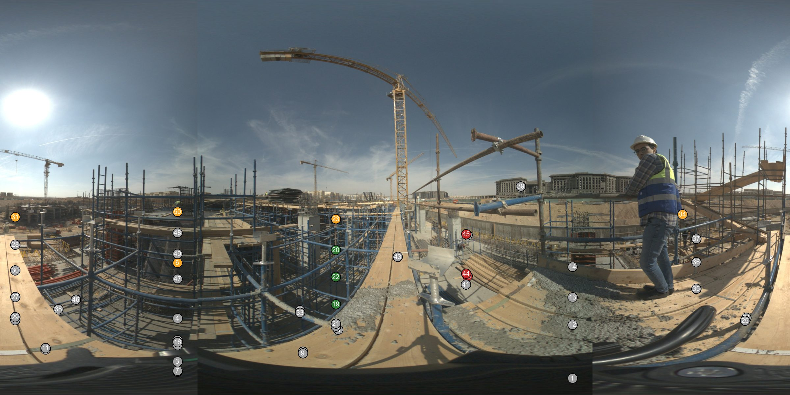
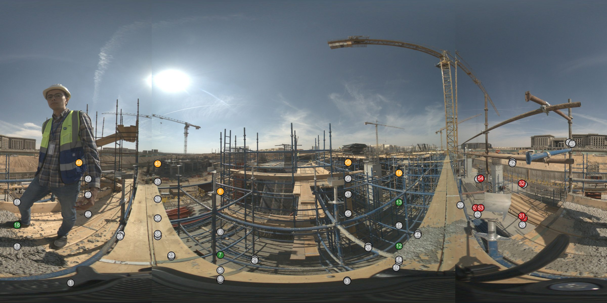
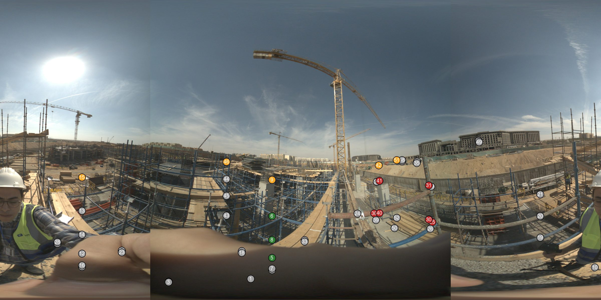

| Page | Taken | Storey · grid | Struct. complete | Struct. in progress | Struct. not started | Archit. complete | Archit. in progress | Archit. not started | |
|---|---|---|---|---|---|---|---|---|---|
 | P01 | 2026-10-31 12:15:15 | HAC-SSL-FL2 · 18/D | 1 | 7 | 0 | 0 | 0 | 6 |
 | P02 | 2026-10-31 12:16:30 | HAC-SSL-FL2 · AFX.A-G/18 | 1 | 7 | 0 | 0 | 0 | 4 |
 | P03 | 2026-10-31 12:21:13 | HAC-SSL-FL2 · 16/C | 0 | 3 | 11 | 0 | 0 | 36 |
 | P04 | 2026-10-31 12:21:44 | HAC-SSL-FL2 · 16/C | 0 | 1 | 11 | 0 | 0 | 34 |
 | P05 | 2026-10-31 12:22:04 | HAC-SSL-FL2 · 17/C | 0 | 6 | 11 | 0 | 0 | 18 |
 | P06 | 2026-10-31 12:23:24 | HAC-SSL-FL2 · 18/C | 0 | 5 | 0 | 0 | 0 | 7 |
 | P07 | 2026-10-31 12:23:47 | HAC-SSL-FL2 · 18/C | 0 | 6 | 0 | 0 | 0 | 3 |
 | P08 | 2026-10-31 12:32:14 | HAC-SSL-GF · 20/B | 3 | 5 | 0 | 0 | 0 | 3 |
 | P09 | 2026-10-31 12:32:34 | HAC-SSL-GF · 20/B | 4 | 5 | 0 | 0 | 0 | 6 |
 | P10 | 2026-10-31 12:33:05 | HAC-SSL-GF · B/AFX.A-17 | 3 | 5 | 0 | 0 | 0 | 6 |